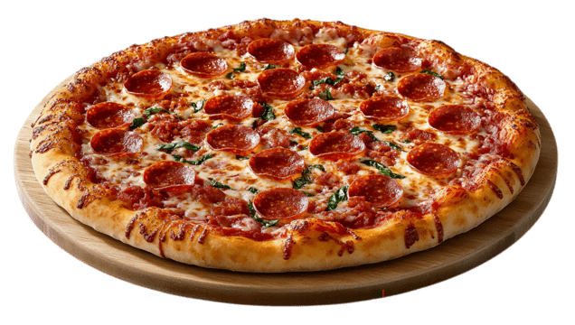
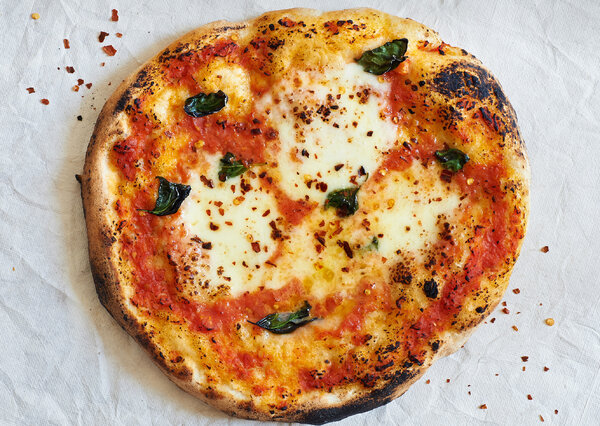

You could call for takeout, or you could make this tasty homemade pizza in under 2 hours. Making pizza from scratch is easier and more rewarding than you think. This beginner friendly recipe gives you everything you need to create a pizza that’s hot, fresh, and delicious. Once you taste that first slice straight from the oven, you will love it!


Step 1
Place a pizza stone or tiles on the middle rack of your oven and turn heat to its highest setting. Let it heat for at least an hour.
Step 2
Put the sauce in the center of the stretched dough and use the back of a spoon to spread it evenly across the surface, stopping approximately ½ inch from the edges.
Step 3
Drizzle a little olive oil over the pie. Break the cheese into large pieces and place these gently on the sauce. Scatter basil leaves over the top.
Step 4
Using a pizza peel, pick up the pie and slide it onto the heated stone or tiles in the oven. Bake until the crust is golden brown and the cheese is bubbling, approximately 4 to 8 minutes.